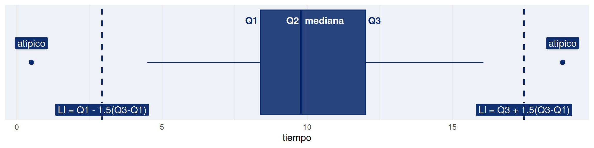
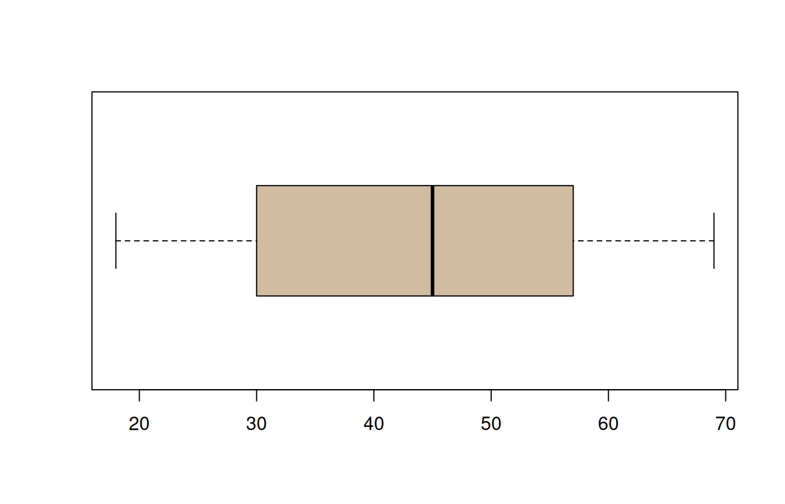
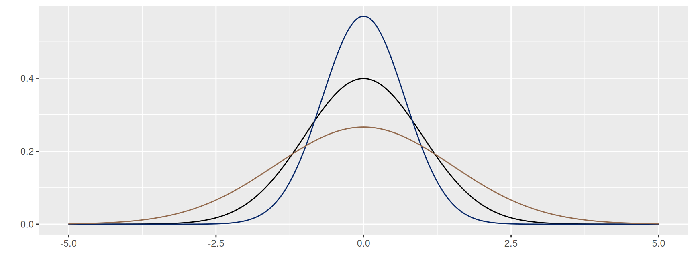
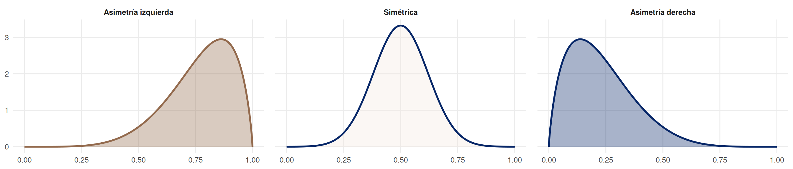
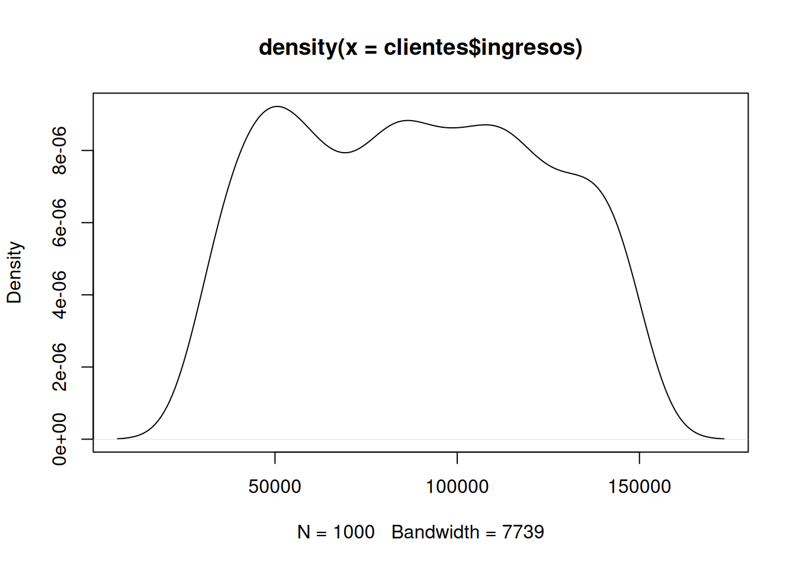

Unidad 1.1
dgonzalez
¿Qué es un indicador?

Cuando nos subimos a un auto observamos un tablero con muchos indicadores que permiten al conductor validar el estado del vehículo. Todos los podemos visualizar al tiempo con el fin de darnos una idea del nivel de combustible, la temperatura, el estado de la batería, si alguna puerta está abierta, la velocidad a la que se viaja, entre otros.
Al igual que la situación anterior, cuando nos enfrentamos a un análisis de datos, requerimos resumirlos en indicadores, tablas y gráficos que nos permitan un análisis más fácil.
Tomaremos una base de datos de clientes para analizar indicadores asociados a hábitos de compra y características generales.
library(DT)
# CAMBIAR DATA ---------------------------------------------------
DT::datatable(head(clientes, 218),fillContainer = FALSE, options = list(pageLength = 8))# DT::datatable(head(Visitantes, 389455),fillContainer = FALSE, options = list(pageLength = 8))Las bases de datos utilizadas se encuentran en el directorio
data/ del curso.
Tablas de frecuencia
Tablas de frecuencia para variables cualitativas
Las distribuciones de frecuencia o también llamadas tablas de frecuencia nos sirven para agrupar los datos y así permitir resumir para poder tener una idea más clara de sus características.
Para las variables cualitativas la tabla posee 3 columnas :
c1: los diferentes valores que toma la variable.
c2: frecuencia absoluta que consiste en el conteo para cada uno de los valores distintos que toma la variable.
c3: frecuencia relativa que corresponde al porcentaje de la cantidad de datos para cada uno de los valores.
# Forma simple
# tabla1 <- table(Visitantes$Mes)
# names(tabla1) <- c("Ene", "Feb", "Mar", "Abr", "May", "Jun", "Jul", "Ago", "Sep", "Oct", "Nov", "Dic")
# tabla1
# Forma simple
# CAMBIAR DATA ---------------------------------------------------
table(clientes$categoria_preferida)
Alimentos Deportes Electrónica Hogar Ropa
199 210 215 206 170
#utilizando summarytools
categoria=as.factor(clientes$categoria_preferida)
summarytools::freq(categoria, cumul = FALSE)Frequencies
| Freq | % Valid | % Total | |
|---|---|---|---|
| Alimentos | 199 | 19.90 | 19.90 |
| Deportes | 210 | 21.00 | 21.00 |
| Electrónica | 215 | 21.50 | 21.50 |
| Hogar | 206 | 20.60 | 20.60 |
| Ropa | 170 | 17.00 | 17.00 |
| Total | 1000 | 100.00 | 100.00 |
Tablas de frecuencia para variables cuantitativas
Para las variables cuantitativas las tablas de frecuencias tienen una presentación diferente a la vista anteriormente. Como se trata de variables con un gran número de valores diferentes, es necesario dividirlas por intervalos.
Cuando tenemos los datos sin agrupar nos es difícil extraer información que nos permita hacer un análisis de los mismos
nf=c(4.1, 2.7, 3.1, 3.2, 3.0, 3.2, 2.0, 2.4, 1.6, 3.2, 3.1, 2.6, 2.0, 2.4, 2.8, 3.3, 4.0, 3.4, 3.0, 3.1, 2.7, 2.7, 3.0, 3.8, 3.2, 2.2, 3.5, 3.5, 3.8, 3.5, 3.9, 4.2, 4.3, 3.9, 3.2, 3.5, 3.5, 3.7, 4.1, 3.7, 3.5, 3.6, 3.2, 3.1, 3.4, 3.0, 3.0, 3.0, 2.7, 1.7, 3.6, 2.1, 2.4, 3.0, 3.1, 2.5, 2.5, 3.6, 2.2, 2.4, 3.1, 3.3, 2.7, 3.7, 3.0, 2.7, 3.0, 3.2, 3.1, 2.4, 3.0, 2.7, 2.5, 3.0, 3.0, 3.0, 3.2, 3.1, 3.8, 4.1, 3.7, 3.5, 3.0, 3.7, 3.7, 4.1, 3.7, 3.9, 3.7, 2.0)
nf [1] 4.1 2.7 3.1 3.2 3.0 3.2 2.0 2.4 1.6 3.2 3.1 2.6 2.0 2.4 2.8 3.3 4.0 3.4 3.0
[20] 3.1 2.7 2.7 3.0 3.8 3.2 2.2 3.5 3.5 3.8 3.5 3.9 4.2 4.3 3.9 3.2 3.5 3.5 3.7
[39] 4.1 3.7 3.5 3.6 3.2 3.1 3.4 3.0 3.0 3.0 2.7 1.7 3.6 2.1 2.4 3.0 3.1 2.5 2.5
[58] 3.6 2.2 2.4 3.1 3.3 2.7 3.7 3.0 2.7 3.0 3.2 3.1 2.4 3.0 2.7 2.5 3.0 3.0 3.0
[77] 3.2 3.1 3.8 4.1 3.7 3.5 3.0 3.7 3.7 4.1 3.7 3.9 3.7 2.0Una primera aproximación puede ser el diagrama de tallos y hojas, que consiste en separar los dígitos de los datos en dos: una primera parte que se repite, llamada tallo, y otra parte que tiene diversos valores. Este diagrama también nos permite ordenar los datos de menor a mayor.
stem(nf)
The decimal point is at the |
1 | 67
2 | 00012244444
2 | 555677777778
3 | 0000000000000011111111222222223344
3 | 555555566677777777888999
4 | 0111123Una forma de construir una tabla de frecuencias por intervalos es
utilizando la función graph.freq del paquete agricolae.
library(agricolae)
k <- 6
brks <- pretty(range(nf, na.rm = TRUE), n = k)
h2 <- agricolae::graph.freq(nf, plot = FALSE, breaks = brks)
t2 <- agricolae::table.freq(h2)
colnames(t2) <- c("LI","LS","Marca_Clase","Frec.Abs","Frec.Rel","Frec.Abs.Ac","Frec.Rel.Ac")
t2 LI LS Marca_Clase Frec.Abs Frec.Rel Frec.Abs.Ac Frec.Rel.Ac
1 1.5 2.0 1.75 2 2.2 2 2.2
2 2.0 2.5 2.25 11 12.2 13 14.4
3 2.5 3.0 2.75 12 13.3 25 27.8
4 3.0 3.5 3.25 34 37.8 59 65.6
5 3.5 4.0 3.75 24 26.7 83 92.2
6 4.0 4.5 4.25 7 7.8 90 100.0Frec.Abs : Frecuencia absoluta
Frec.Rel : Frecuencia relativa
Frec.Abs.Ac : Frecuencia Absoluta Acumulada
Frec.Rel.Ac
: Frecuencia Relativa Acumulada
Si se requiere dividir el rango en intervalos determinados se utiliza
la función cut
nota <- cut(
nf,
breaks = c(0, 0.99, 1.99,2.99,3.99,5), # cubre TODO
right = FALSE, # [a, b) incluye el límite izquierdo
include.lowest = TRUE
)
levels(nota) <- c(
"0.0 - 0.9",
"1.0 - 1.9",
"2.0 - 2.9",
"3.0 - 3.9",
"4.0 - 5.0")
as.data.frame(table(nota)) nota Freq
1 0.0 - 0.9 0
2 1.0 - 1.9 2
3 2.0 - 2.9 23
4 3.0 - 3.9 58
5 4.0 - 5.0 7
Rango percentil
Es un número que divide la muestra en dos partes. \(x\) % de los datos de la muestra son iguales o menores que \(P_{x}\) y un \((100-x)\) % por encima de él.

Para ilustrar el concepto, pensemos en que participamos de una carrera y que el grupo está conformado por 100 corredores. El percentil dará cuenta de mi posición dentro del grupo. Por ejemplo, si mi posición en la carrera en orden de llegada es la décima, indica que por detrás de mí están 90 atletas. Indica esto que soy el percentil 90 (\(P_{90}\)).
Reto :
Qué significado tiene:
Participar en una carrera K10 y ocupar el percentil 30 : \(P_{30}\)
Una nota en un examen de matemáticas ocupó el percentil 90 : \(P_{90}\)
Que significa: \(P_{25}\) ; \(P_{50}\) ; \(P_{75}\)
Diagrama de cajas
# Paquetes
library(ggplot2)
# ---- Datos de ejemplo (puedes reemplazar "tiempo" por tu vector real) ----
set.seed(123)
tiempo <- c(rnorm(50, mean = 10, sd = 2.8), 0.5, 18.8) # incluye 2 atípicos aprox.
# ---- Cálculos: Q1, mediana, Q3, RIQ y cercas (fences) ----
Q1 <- unname(quantile(tiempo, 0.25, type = 7))
Q2 <- unname(quantile(tiempo, 0.50, type = 7))
Q3 <- unname(quantile(tiempo, 0.75, type = 7))
RIQ <- Q3 - Q1
LI_low <- Q1 - 1.5 * RIQ
LI_high <- Q3 + 1.5 * RIQ
# Atípicos (según 1.5*RIQ)
outliers <- tiempo[tiempo < LI_low | tiempo > LI_high]
df_out <- data.frame(tiempo = outliers, y = 1)
# ---- Gráfico ----
p <- ggplot(data.frame(tiempo = tiempo), aes(x = tiempo, y = 1)) +
# Caja
geom_boxplot(
width = 0.55,
fill = "#072768", alpha = 0.85,
color = "#072768", outlier.shape = NA
) +
# Puntos atípicos (manuales para poder etiquetar)
geom_point(
data = df_out,
aes(x = tiempo, y = y),
size = 2.8, color = "#072768"
) +
# Líneas verticales punteadas (límites 1.5*RIQ)
geom_vline(xintercept = LI_low, linetype = "dashed", linewidth = 1, color = "#072768") +
geom_vline(xintercept = LI_high, linetype = "dashed", linewidth = 1, color = "#072768") +
# Etiquetas Q1, Q2, Q3
annotate("text", x = Q1-0.3, y = 1.22, label = "Q1", fontface = "bold", color = "#072768") +
annotate("text", x = Q2-0.3, y = 1.22, label = "Q2", fontface = "bold", color = "white") +
annotate("text", x = Q3+0.3, y = 1.22, label = "Q3", fontface = "bold", color = "#072768") +
# Texto "mediana" dentro de la caja
annotate("text", x = Q2+0.8, y = 1.22, label = "mediana", fontface = "bold", color = "white") +
# Labels tipo “cajita” para atípicos (izq y der si existen)
{
if (length(outliers) > 0) {
# Toma el menor y el mayor outlier para ubicar etiquetas a ambos lados
left_o <- min(outliers)
right_o <- max(outliers)
list(
annotate("label", x = left_o, y = 1.10, label = "atípico",
fill = "#072768", color = "white", label.size = 0, alpha = 0.95),
annotate("label", x = right_o, y = 1.10, label = "atípico",
fill = "#072768", color = "white", label.size = 0, alpha = 0.95)
)
}
} +
# Labels de los límites (como en tu imagen)
annotate("label", x = LI_low, y = 0.75,
label = "LI = Q1 - 1.5(Q3-Q1)",
fill = "#072768", color = "white", label.size = 0, alpha = 0.95) +
annotate("label", x = LI_high, y = 0.75,
label = "LI = Q3 + 1.5(Q3-Q1)",
fill = "#072768", color = "white", label.size = 0, alpha = 0.95) +
# Ejes / tema
scale_y_continuous(NULL, breaks = NULL) +
labs(x = "tiempo") +
theme_minimal(base_size = 14) +
theme(
panel.grid.major.y = element_blank(),
panel.grid.minor.y = element_blank(),
panel.grid.minor.x = element_line(alpha = 0.25),
panel.grid.major.x = element_line(alpha = 0.35),
plot.background = element_rect(fill = "white", color = NA),
panel.background = element_rect(fill = "#EEF2F8", color = NA)
)
p
Con ayuda del diagrama de tallos y hojas es posible ubicar los percentiles en un conjunto de datos
set.seed(567)
edad = sample(clientes$edad_cliente, 50)
stem(edad)
The decimal point is 1 digit(s) to the right of the |
1 | 889
2 | 012266788
3 | 00023345668
4 | 00111333457899
5 | 233666
6 | 0247789
En este caso el valor mínimo y el máximo corresponden a los extremos observados de la variable.
Ahora determine en este diagrama los percentiles :
- \(P_{25}\)
- \(P_{50}\)
- \(P_{75}\)
- \(P_{10}\)
Es más rápido utilizando la función de R : quantile
quantile(clientes$edad_cliente, c(.10,0.25,.50,0.75,0.90))10% 25% 50% 75% 90%
23 30 45 57 64
Resumen
| Percentiles | Divide la muestra en 100 partes de igual porcentaje, cada una con un 1%. \(P_{1}, P_{2}, \dots P_{99}\) |
| Deciles | Dividen la muestra en 10 parte de igual porcentaje, cada una con un 10%. \(D_{1}, D_{2}, \dots D_{9}\) |
| Quintiles | Dividen la muestra en 5 partes de igual porcentaje, cada una con un 20%. \(K_{1}, K_{2}, K_{3}, K_{4}\) |
| Cuartiles | Dividen la muestra en 4 partes de igual porcentaje, cada una con un 25%. \(Q_{1}, Q_{2}, Q_{3}\) |
Indicadores de los Datos
| Central | Dispersión | Forma |
|---|---|---|
| media | rango | sesgo o asimetría |
| mediana | varianza | curtosis |
| moda | desviación estándar | |
| media truncada | coeficiente de variación | |
| rango medio | ||
| media armónica | ||
| media geométrica | ||
| media ponderada |
Indicadores de Centro
Media aritmética
\[\bar{x}= \frac{1}{n} \sum_{i=1}^{n} x_{i}\]
Es uno de los indicadores estadísticos más conocidos.
Propiedades de la media :
La suma de las desviaciones de los datos con respecto a la media es cero. \(\sum (x_{i}-\bar{x})=0\).
La suma de los cuadrados de las desviaciones de los datos con respecto a un valor \(a\) es mínimo cuando \(a=\bar{x}\).
Si \(x_{i}=k\) para todo \(i\), entonces, \(\bar{x}=k\).
Si a todos los datos de una variable se le suma una constante \(k\), es decir \(y_{i}=x_{i} + k\), entonces \(\bar{y}=\bar{x} +k\)
Si todos los datos de una variable se multiplican por una constante \(k\), es decir \(y_{i}=kx_{i}\), entonces \(\bar{y}=k\bar{x}\)
Si \(z_{i}=a x_{i}+b y_{i}\), donde: a, b constantes y \(x_{i}\), \(y_{i}\) variables, entonces: \(\bar{z}=a\bar{x}+b\bar{y}\).
Ejemplo 1
El promedio de edad de los clientes se obtiene con:
mean(clientes$edad_cliente,na.rm = TRUE)[1] 43.783cat("media : ", mean(clientes$edad_cliente,na.rm = TRUE))media : 43.783
Ejemplo 2
El valor promedio de ingresos de los clientes se obtiene con:
mean(clientes$ingresos, na.rm = TRUE)[1] 88500.8
Ejemplo 3
El promedio del conjunto de números enteros entre uno y diez es 5.5
x=1:10
x [1] 1 2 3 4 5 6 7 8 9 10cat("media :",mean(x))media : 5.5
Ejemplo 4
Surge el problema de qué se puede tener este indicador cuando uno de sus datos cambia drásticamente. Por ejemplo, si se cambia el último dato (10) por otro valor como 100, ¿qué pasaría con la media?
En este caso el promedio se eleva por el cambio realizado. Esto puede suceder en algunos casos donde trabajamos información que puede presentar datos extremos o atípicos.
x=1:10
x[10]=100
x [1] 1 2 3 4 5 6 7 8 9 100cat("media :" ,mean(x))media : 14.5
Mediana
Me :Es el número que divide la muestra en dos partes de igual proporción (50% : 50%). Es decir que corresponde a:
\[P_{50} = D_{5} = Q_{2}\]
también corresponde a la línea central del diagrama de cajas.
median(clientes$edad_cliente,na.rm = TRUE)[1] 45
boxplot(clientes$edad_cliente, las=1, horizontal = TRUE, col = c0)
La Me corresponde a la línea central de la caja en el diagrama de cajas.
La mediana es más robusta a los cambios en los datos extremos. En presencia de datos atípicos es mejor utilizar la mediana en lugar de la media.
x=1:10
x [1] 1 2 3 4 5 6 7 8 9 10cat("media :" ,median(x))media : 5.5
x[10]=20
x [1] 1 2 3 4 5 6 7 8 9 20cat("media :" ,median(x))media : 5.5
Moda
Mo : Dato o valor que más se repite. Es utilizada como medida de tendencia central en variables cualitativas o en cuantitativas discretas con pocos valores. En una tabla o gráfico se puede distinguir fácilmente.
#utilizando summarytools
summarytools::freq(clientes$categoria_preferida, cumul = FALSE, headings = FALSE)Error in `match.call()`:
! ... used in a situation where it does not exist
Freq % Valid % Total
----------------- ------ --------- ---------
Alimentos 199 19.90 19.90
Deportes 210 21.00 21.00
Electrónica 215 21.50 21.50
Hogar 206 20.60 20.60
Ropa 170 17.00 17.00
<NA> 0 0.00
Total 1000 100.00 100.00moda: la categoría con mayor frecuencia.
Otras medidas de centro
Media truncada
Con el fin de evitar que los datos atípicos generen sesgos en el indicador de la media, es posible separar el 90% de los datos, quitando un 5% de los datos más pequeños y un 5% de los datos mayores. A este indicador se le llama media truncada al 10% (\(\bar{x}_{_{0.10}}\)).
mean(clientes$edad_cliente, na.rm = TRUE, trim = 0.10)[1] 43.87
Rango medio
\[\frac{1}{2}\Big(max(x)+min(x)\Big)\]
(max(clientes$edad_cliente,na.rm = TRUE)+min(clientes$edad_cliente,na.rm = TRUE))/2[1] 43.5La diferencia entre el valor máximo y el mínimo corresponde al rango
de la variable.
Media geométrica
Este indicador de tendencia central se utiliza para promediar tasa de crecimiento o de interés. Para encontrar su valor se multiplican los valores de \(n\) tasas incrementadas en uno (\(1+r\)). A ese producto se le extrae la raíz n-esima.
\[MG = \Bigg(\displaystyle\prod_{i=1}^n (r_{i}+1)\Bigg)^{1/n}\]
Ejemplo
La inflación anual (IPC, variación anual a diciembre) de los últimos 5 años completos en Colombia (2021–2025), según comunicados del DANE:
| Año | 2021 | 2022 | 2023 | 2024 | 2025 |
|---|---|---|---|---|---|
| Inflación anual (Dic vs Dic) | 5.62% | 13.12% | 9.28% | 5.20% | 5.10% |
# install.packages("psych")
library(psych)
x <- c(0.0562,0.1312,0.0928,0.0520,0.0510)
psych::geometric.mean(x, na.rm = TRUE)[1] 0.07108179\[\text{inflación promedio : } 7.11 \%\]
Media armónica
\[H = \dfrac{n}{\frac{1}{x_{1}}+\frac{1}{x_{2}}+ ... + \frac{1}{x_{n}}} \]
Este indicador corresponde al inverso de la media aritmética
Ejemplo
Un equipo tiene 3 personas que realizan la misma tarea repetitiva (por ejemplo: revisar formularios). Medimos su productividad en tareas/hora:
- Persona A: 12 tareas/h
- Persona B: 8 tareas/h
- Persona C: 6 tareas/h
El promedio que represente el tiempo típico por tarea cuando todos hacen tareas del mismo tipo, conviene usar media armónica porque productividad es una tasa.
\[x_1 = 12,\quad x_2 = 8,\quad x_3 = 6 \qquad \text{(tareas/hora)}\] \[H=\frac{n}{\frac{1}{x_1}+\frac{1}{x_2}+\frac{1}{x_3}}\]
Calculamos:
\[H=\frac{3}{\frac{1}{12}+\frac{1}{8}+\frac{1}{6}} = 8 \ \text{tareas/hora}\]
Problema reconocimiento de grupo
Supongamos que solo se nos dice que un grupo conformado por 4 personas tiene un promedio de edad de \(20\) años. Todos inicialmente suponemos que se trata de cuatro jóvenes que tienen edades cercanas a \(20\) años. Pero puede ocurrir que estemos lejos de acertarlo, pues existen múltiples combinaciones de edades que tienen como promedio \(20\) años.
Por ello es necesario tener más información sobre el grupo.
| Grupo 1 | Grupo 2 |
| Edades : 19, 22, 18, 21 | Edades : 39, 38, 2, 1 |
| Promedio : 20 años | Promedio : 20 años |

Hace falta otro indicador que nos oriente de cuál grupo hablamos
cuando solo tenemos como información: media = \(20\) años. Esta necesidad la suplen los
indicadores de dispersión.
Indicadores de Dispersión
Rango
\(r = max(x) - min(x)\)
En caso de los dos grupos:
| Grupo 1 | Grupo 2 |
|---|---|
| \(\bar{x} = 20\) años | \(\bar{x} = 20\) años |
| \(r = 4\) años | \(r = 38\) años |
Es importante hacer notar que si además de la media conocemos también un indicador de dispersión, en este caso el rango, podemos intuir si se trata del primero o segundo grupo. El rango es un indicador muy útil cuando se deben realizar cálculos rápidos.
Varianza
Es la medida de dispersión más utilizada en estadística y está definida por
\[s^{2}=\frac{1}{n-1} \sum_{i=1}^{n} (x_{i}-\bar{x})^{2}\]
Propiedades de la varianza
\(s^{2} = \frac{1}{n} \sum x_{i}^{2}- (\bar{x})^{2}\)
La varianza es siempre no negativa \(s^{2} >=0\)
La varianza de una constante es cero \(s_{k}^{2}=0\)
Si \(y_{i}= x_{i} + k\), entonces \(s_{y}^{2}= s_{x}^{2}\)
Si \(y_{i}=k x_{i}\), entonces \(s_{y}^{2}= k^{2} s_{x}^{2}\)
Si \(y_{i}=x_{i} + k\) , entonces \(s_{y}^{2} = s_{x}^{2}\)
Si \(z_{i} = a x_{i} + b y_{i}\), entonces \(s_{z}^{2}\) = \(a^{2}s_{x}^{2}\) + \(b^{2}s_{y}^{2}\) + \(2ab\) \(cov(xy)\)
La varianza se puede interpretar como el promedio de las diferencias cuadradas entre cada uno de los datos y la media
El problema de la varianza es su interpretación
Sus unidades son al cuadrado y en la mayoría de los casos no es posible interpretarlos. Por esta razón se optó por utilizar otra medida de dispersión.
Desviación estándar
Es la raíz cuadrada de la varianza
\[s=\sqrt{s^{2}}\]
Nota : no aplican todas las propiedades de la varianza
cat( "Varianza :",var(clientes$edad_cliente),"años cuadrados", "\n" )Varianza : 226.2682 años cuadrados cat("Desviación estándar :",sd(clientes$edad_cliente),"años")Desviación estándar : 15.04221 añosAunque la desviación estándar reduce el problema debido a tener las mismas unidades de la variable, es útil para comparación de dos grupos
Coeficiente de variación
Nos indica qué tan grande o qué tan pequeña es la desviación estándar con respecto a su media.
\[CV= \dfrac{s}{\bar{x}} \times 100 \% \]
Existen diferentes reglas empíricas para la interpretación del coeficiente de variación. Una de ellas establece como límite el 20% para separar los grupos homogéneos de los heterogéneos. Por lo general se utiliza un valor hasta el 20% para determinar que un grupo de datos es homogéneo; de lo contrario, se calificará como heterogéneo.
cat("Coeficiente de variación :",sd(clientes$edad_cliente)/mean(clientes$edad_cliente)*100, " %")Coeficiente de variación : 34.35629 %En este caso se obtiene un valor del coeficiente de variación que indica la dispersión relativa de la edad de los clientes, pudiendo calificar la variable como más homogénea o heterogénea según el valor obtenido.
Indicadores de Forma
Curtosis
Se mide a través del coeficiente de curtosis que mide cuán puntiaguda es una distribución respecto a la curva de la distribución normal estándar.
De acuerdo con su valor, la puntiagudez de los datos puede clasificarse en tres grupos:
Leptocúrtica, con valores grandes para el coeficiente ( CA>0)
Mesocúrtica, con valores medianos para el coeficiente ( CA=0)
Platicúrtica, con valores pequeños para el coeficiente ( CA<0)

\[CA = \dfrac{1}{s^{4}}\Bigg(\dfrac{1}{n}
\sum_{i=1}^{n} (x-\bar{x})^{4} \Bigg) - 3\]
rapportools::kurtosis(clientes$edad_cliente)[1] -1.19632Asimetría o sesgo
Mide que tanto la forma de la distribución de frecuencias de los datos es simétrica o no con respecto a la media. Esta característica de los datos se mide a través del coeficiente de asimetría o sesgo.
Es simétrica si el valor del indicador es 0 (\(\bar{x}=Me\))
Es asimétrica a la izquierda si el valor del indicador es negativo (\(\bar{x}<Me\))
Es asimétrica a la derecha si el valor del indicador es positivo (\(\bar{x}>Me\))

- Asimetría negativa: Poco con poco, mucho con mucho
- Simétrica: Poco con poco, poco con mucho, mucho alrededor de un centro
- Asimetría positiva: Mucho con poco, poco con mucho
\[CA = \dfrac{1}{s^{4}}\Bigg(\dfrac{1}{n} \sum_{i=1}^{n} (x-\bar{x})^{4} \Bigg) - 3\]
rapportools::skewness(clientes$edad_cliente)[1] -0.04586223El valor obtenido para el sesgo nos indica que existe un sesgo positivo o a la derecha (mucho con poco - poco con mucho). Este resultado se interpreta como una mayor concentración de valores bajos y pocos valores altos.
summarytools::descr(clientes$edad_cliente)Error in `match.call()`:
! ... used in a situation where it does not existDescriptive Statistics
clientes$edad_cliente
----------------- -----------------------
Mean 43.78
Std.Dev 15.04
Min 18.00
Q1 30.00
Median 45.00
Q3 57.00
Max 69.00
MAD 19.27
IQR 27.00
CV 0.34
Skewness -0.05
SE.Skewness 0.08
Kurtosis -1.20
N.Valid 1000.00
N 1000.00
Pct.Valid 100.00summarytools::descr(mtcars$mpg)Error in `match.call()`:
! ... used in a situation where it does not existDescriptive Statistics
mtcars$mpg
----------------- ------------
Mean 20.09
Std.Dev 6.03
Min 10.40
Q1 15.35
Median 19.20
Q3 22.80
Max 33.90
MAD 5.41
IQR 7.38
CV 0.30
Skewness 0.61
SE.Skewness 0.41
Kurtosis -0.37
N.Valid 32.00
N 32.00
Pct.Valid 100.00# CAMBIAR DATA ---------------------------------------------------
d1=density(clientes$edad_cliente, na.rm=TRUE); plot(d1)
d2=density(clientes$ingresos); plot(d2)
Formulario
| Estadística | fórmula | código R |
|---|---|---|
| centro | ||
| media aritmética | \(\displaystyle\dfrac{1}{n}\sum_{i=1}^{n} x_{i}\) | mean(x) |
| mediana | \(Me = P_{50} = X_{n+1/2}\) | median(x) |
| moda | \(Mo\) dato que más se repite | |
| media truncada | media calculada con el 90% central de los datos | mean(x,trim=10/100) |
| rango medio | \(rm=\dfrac{min\{x\}-max\{x\}}{2}\) | max(x)-min(x) |
| media geométrica | \((x_{1} \times x_{2} \times x_{3} .... x_{n})^{1/n}\) | |
| media armónica | \(\dfrac{n}{\dfrac{1}{x_{1}}+\dfrac{1}{x_{2}}+\dfrac{1}{x_{3}}+...+\dfrac{1}{x_{n}}}\) | |
| dispersión | ||
| rango | \(r= max\{x\}-min\{x\}\) | max(x)-min(x) |
| varianza | \(s^{2} = \dfrac{1}{n-1} \displaystyle\sum_{i=1}^{n}(x_{i}-\bar{x})^{2}\) | var(x) |
| desviación estandar | \(s = \sqrt{s^{2}}\) | sd(x) |
| coeficiente de variación | \(cv= \dfrac{s}{\bar{x}} \times 100\) % | sd(x)/mean(x)*100 |
| forma | ||
| coeficiente de curtosis | \(\displaystyle\dfrac{Q_{3}-Q_{1}}{P_{90}-P_{10}}\) | rapportools::kurtosis(bpe$promedio) |
| coeficiente de asimetría | \(\displaystyle\dfrac{3(\bar{x}-Me)}{s}\) | rapportools::skewness(bpe$promedio) |
| percentil 25 | \(X_{n \times 0.25}\) | quantile(x,0.25) |
| percentil 50 | \(X_{n \times 0.50}\) | quantile(x,0.50) |
| percentil 75 | \(X_{n \times 0.75}\) | quantile(x,0.75) |
| rango intercuartílico | \(Q_{3}-Q_{1}\) |
Ejemplo
Nivel de ansiedad
| Los siguientes datos corresponden al nivel de ansiedad de un grupo de estudiantes de la universidad, valorados antes de la presentación del primer examen parcial. El investigador a cargo del proyecto utilizó una prueba para medir el nivel de ansiedad que permite puntajes entre 0 y 100. Los valores inferiores a 50 puntos se consideran como nivel bajo. Entre 50 y 80, nivel medio y superiores a 80 se consideran altos. |
Otra variable importante en el análisis corresponde a la facultad a la que pertenece el estudiante
- Facultad de Ingeniería y Ciencias
- Facultad de Ciencias Económicas y Administrativas
- Facultad de Humanidades
- Facultad de Salud
Los resultados obtenidos se presenta a continuación :
nivans=c(28,33,34,36,38,38,41,41,45,45,46,46,47,47,48,48,49,50,51,51,51,52,53,53,
53,54,54,54,55,55,55,56,56,56,57,57,58,60,61,61,61,62,63,64,64,65,65,65,
65,65,66,67,67,68,68,68,69,69,69,70,70,71,74,77,77,78,79,79,80,82,85,89,
90,96,58,90,77,71,41,55,53,65,57,56,68,56,50,36,70,57,41,62,48,67,33,52,
65,67,79,55,34,46,55,56,47,69,61,54,74,47,64,79,85,61,28,46,65,51,49,45,
78,96,68,38,77,34,69,69,38,65,63,68,48,53,82,61,51,45,66,65,64,70,89,51,
54,53,80,54,60,53)
fac=c(2,1,2,2,4,3,4,2,4,2,4,1,1,1,1,1,1,2,3,3,3,3,1,2,1,2,2,1,1,2,3,2,3,2,2,3,3,
1,1,1,2,1,2,2,2,3,1,1,3,1,4,3,1,3,2,1,2,3,4,3,2,3,4,4,1,3,4,4,2,2,1,4,2,1,
2,4,1,1,1,3,4,1,1,1,1,1,3,3,3,3,1,1,1,2,2,1,3,1,1,1,3,2,2,2,2,1,2,2,1,3,2,
1,2,2,2,4,2,1,3,4,1,1,3,1,2,2,2,1,3,3,1,1,2,2,3,3,3,1,4,3,1,2,4,2,2,1,2,3,
2,2)
data=data.frame(fac, nivans) # forma base de datos Tablas de frecuencia
- Construya una tabla de frecuencia que le permita establecer las frecuencias en cada uno de los rangos descritos y analice los resultados obtenidos.
Primera forma : Utilizando el paquete
agricolae
h2=with(data,graph.freq(nivans,plot=FALSE))
t2=table.freq(h2);
colnames(t2) = c(" LI ", " LS ", "marca clase'", "Frec.Abs","Frec.Rel", "Frec.Abs.Ac","Frec.Rel.Ac")
t2 LI LS marca clase' Frec.Abs Frec.Rel Frec.Abs.Ac Frec.Rel.Ac
1 28.0 36.5 32.25 9 6.0 9 6.0
2 36.5 45.0 40.75 8 5.3 17 11.3
3 45.0 53.5 49.25 35 23.3 52 34.7
4 53.5 62.0 57.75 32 21.3 84 56.0
5 62.0 70.5 66.25 40 26.7 124 82.7
6 70.5 79.0 74.75 10 6.7 134 89.3
7 79.0 87.5 83.25 10 6.7 144 96.0
8 87.5 96.0 91.75 6 4.0 150 100.0Segunda forma : utilizando la función
hist
h=hist(data$nivans, breaks = c(20,29.99,39.99,49.99,59.99,69.99,79.99,89.99,100), plot=FALSE)
LI=round(h$breaks[1:8],0)
LS=round(h$breaks[2:9],0)
ni=h$counts
hi=h$counts/150
Ni=cumsum(h$counts)
Hi=Ni/150
t=data.frame(LI,LS,ni,hi,Ni,Hi)
t LI LS ni hi Ni Hi
1 20 30 2 0.01333333 2 0.01333333
2 30 40 11 0.07333333 13 0.08666667
3 40 50 22 0.14666667 35 0.23333333
4 50 60 41 0.27333333 76 0.50666667
5 60 70 44 0.29333333 120 0.80000000
6 70 80 18 0.12000000 138 0.92000000
7 80 90 8 0.05333333 146 0.97333333
8 90 100 4 0.02666667 150 1.00000000Tercera forma : utilizando la funciones :
cut y cbind
nivans1=cut(data$nivans, breaks = c(20,29.99,39.99,49.99,59.99,69.99,79.99,89.99,100))
t2=table(nivans1)
t2=cbind(t2, t2/sum(t2),cumsum(t2), cumsum(t2)/sum(t2))
colnames(t2)=c("n","h","N","H")
t2 n h N H
(20,30] 2 0.01333333 2 0.01333333
(30,40] 11 0.07333333 13 0.08666667
(40,50] 22 0.14666667 35 0.23333333
(50,60] 41 0.27333333 76 0.50666667
(60,70] 44 0.29333333 120 0.80000000
(70,80] 18 0.12000000 138 0.92000000
(80,90] 8 0.05333333 146 0.97333333
(90,100] 4 0.02666667 150 1.00000000El grupo observado corresponde a un total de 150 estudiantes de las cuatro facultades de la universidad (aún no estaba la Facultad de Hábitat) y presentan un valor promedio de 59.5 puntos que corresponde a un nivel medio. Su coeficiente de variación (24%) muestra un poco de heterogeneidad en los valores alcanzados por los estudiantes, mientras que su forma se aproxima a una distribución simétrica.
Tabla de frecuencias para variables cualitativas utilizando del
paquete summarytools la función freq
data$fac[data$fac==1]="Facultad de Ingeniería y Ciencias"
data$fac[data$fac==2]="Facultad de Ciencias Económicas y Administrativas"
data$fac[data$fac==3]="Facultad de Humanidades"
data$fac[data$fac==4]="Facultad de Salud"
summarytools::freq(data$fac, cumul = FALSE)Error in `match.call()`:
! ... used in a situation where it does not existFrequencies
Freq % Valid % Total
------------------------------------------------------- ------ --------- ---------
Facultad de Ciencias Económicas y Administrativas 48 32.00 32.00
Facultad de Humanidades 34 22.67 22.67
Facultad de Ingeniería y Ciencias 51 34.00 34.00
Facultad de Salud 17 11.33 11.33
<NA> 0 0.00
Total 150 100.00 100.00Los resultados indican una mayor proporción de estudiantes de la Facultad de Ingeniería y Ciencias (34%), mientras que la Facultad de Salud es la menor (11.3%).

Lo podemos lograr…
Daniel Enrique González Gómez
Imagen tomada de : https://pixabay.com/es/images/search/paisaje/